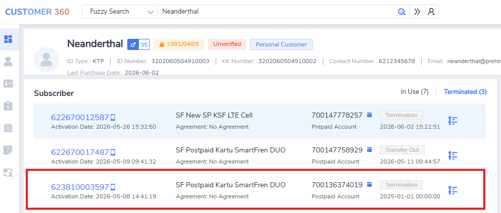
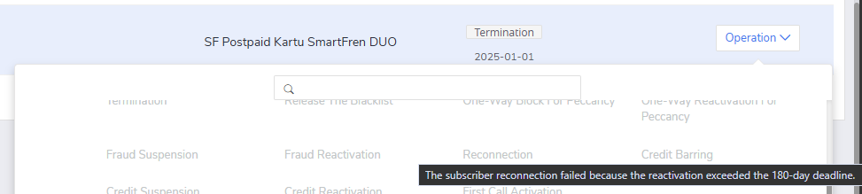

Test Ticket SF_E2E_OCP_162¶
Description: Reconnection for termination MDN after X days (fail)
Pre-requisite:
- The system is running normally.
- Existing termination subscriber.
- the termination MDN after X days
Test Status: SUCCESS✅
Steps:
| No. | Step | Data | Expected Result |
|---|---|---|---|
| 1 | Go to ‘Order Entry’ GUI | - | Got to 'Order Entry' GUI successfully. |
| 2 | Query termination subscription | - | Query termination subscription successfully. |
| 3 | Click [Operation → Reconnection] in 'Subscriber' Tab | - | Prompt: More than X days. Not allowed to perform reconnection. |
Evidence Results:
The expired terminated subscribed can be simulated by doing manual update to the cc.subs database. Full query is shown below:
UPDATE prod
SET
prod_state_date = TO_DATE('2025-01-01', 'YYYY-MM-DD'),
update_date = TO_DATE('2025-01-01', 'YYYY-MM-DD')
WHERE cust_id=3014104699
AND subs_plan_id IS NOT NULL
AND prod_state = 'B'
AND prod_id=30127627143
;
COMMIT;
The terminated subscription can be queried successfully:

The reconnection option is greyed-out and not available. The prompt also showing hint that the current terminated subscriber already exceed 180 days:
